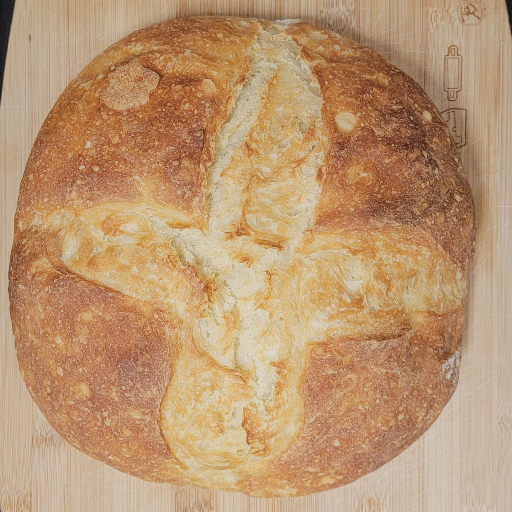
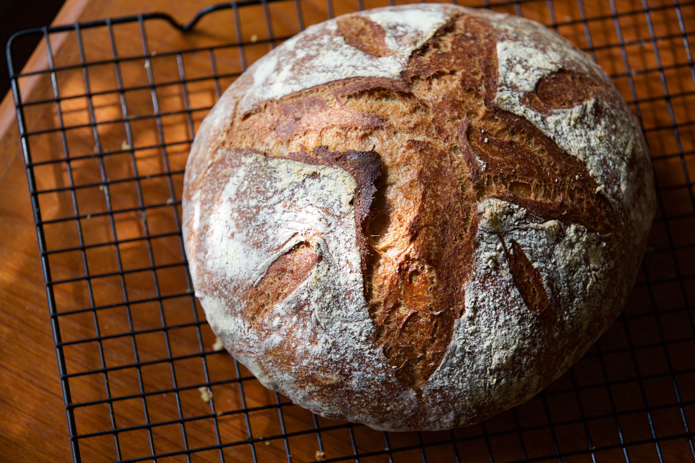
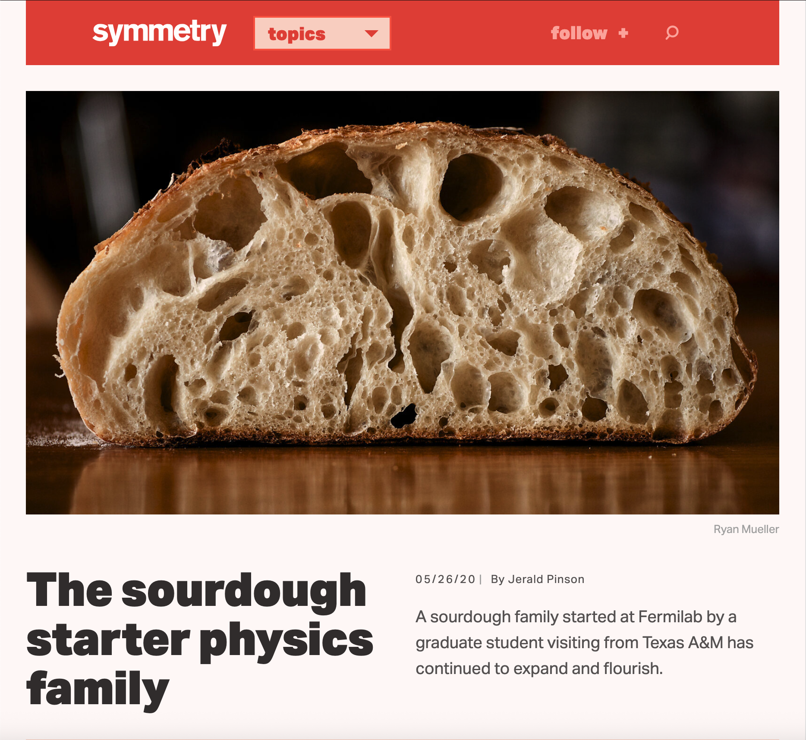

Bread Recipes

First time baking bread? Bake this!
A Basic Bread Recipe

Level up your game with prefermentation.
A slightly more advanced recipe that can produce a more open crumb structure and has deeper flavor.

Symmetry Magazine Sourdough
This was the recipe I used to create the bread pictured in Symmetry magazine!